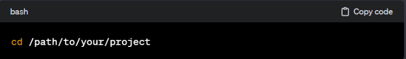
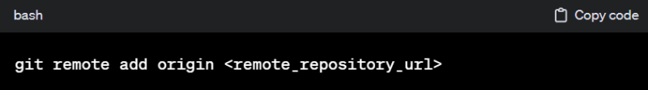
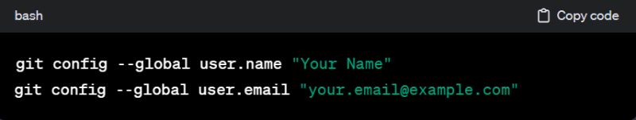
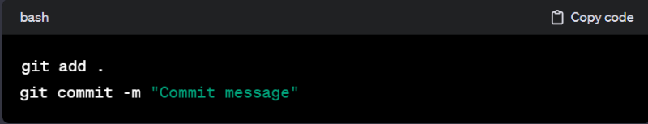
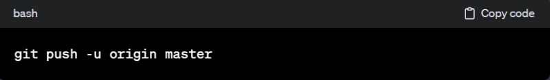

S.cycu.org <<
Previous Next >> Exercises
Localhost
在本地開發環境（localhost）進行倉庫設置通常涉及使用版本控制系統，例如Git。以下是一般的步驟，以使用進行解釋：
-
打開終端或命令行界面:
- 打開你的電腦上的終端機（Terminal）或命令行界面，這取決於你使用的操作系統。
-
導航到你的本地項目目錄:
- 使用
cd 命令（改變目錄）導航到你的本地項目目錄。例如：

-
使用命令行工具執行相關的倉庫設置:
- 如果尚未初始化 Git 倉庫，可以使用以下命令進行初始化：
- 如果已有遠程倉庫，可以使用以下命令添加遠程倉庫地址：
git remote add origin <remote_repository_url>

- 如果需要配置使用者名稱和郵箱，可以使用以下命令：
git config --global user.name "Your Name"
git config --global user.email "your.email@example.com"

- 其他可能的設置包括分支管理、忽略文件等，可以使用相應的 Git 命令完成設置。
-
提交更改和推送到遠程倉庫:
- 使用以下命令將更改添加到本地倉庫：
git add .
git commit -m "Commit message"

- 如果是第一次推送，使用以下命令將更改推送到遠程倉庫：
git push -u origin master

- 其中，
master 可能是你當前的主分支，根據你的設置可能會有所不同。
這些是一般的步驟，具體的命令和設置可能會因項目需求、團隊規範或個人偏好而有所不同。確保你熟悉你所使用版本控制系統的命令和文檔，以確保正確地配置和管理你的本地倉庫。
S.cycu.org <<
Previous Next >> Exercises